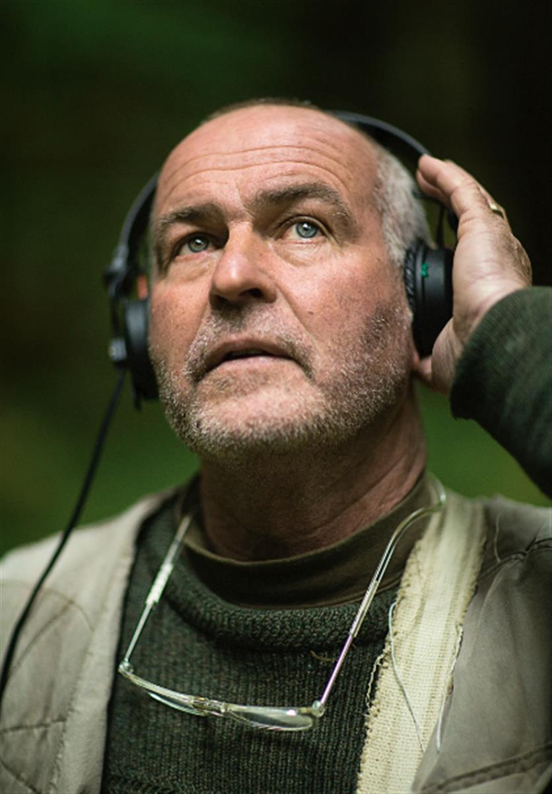
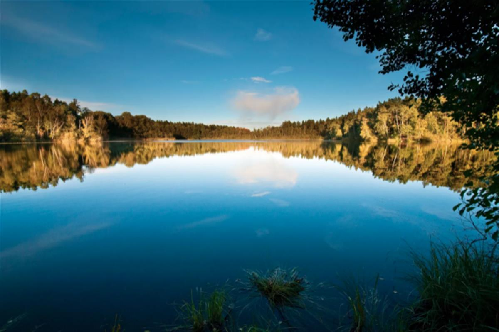
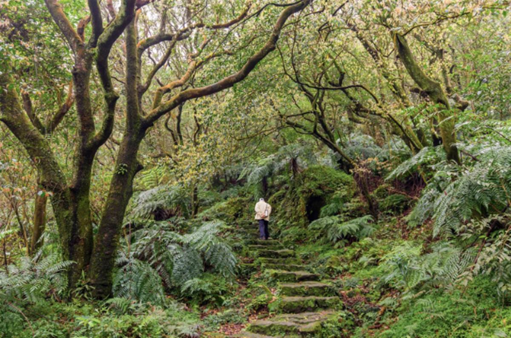
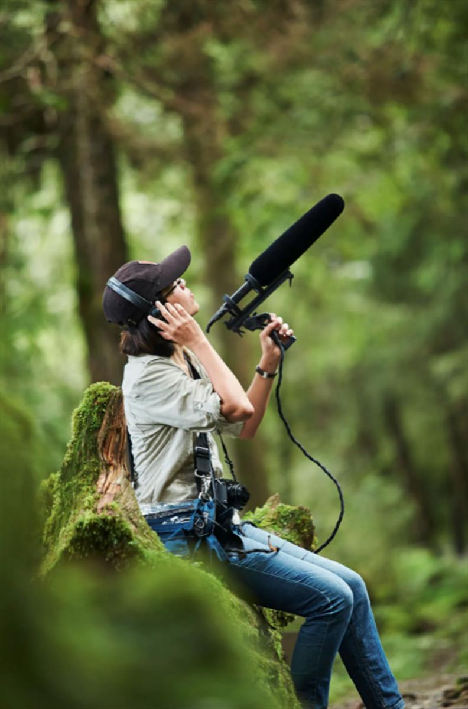
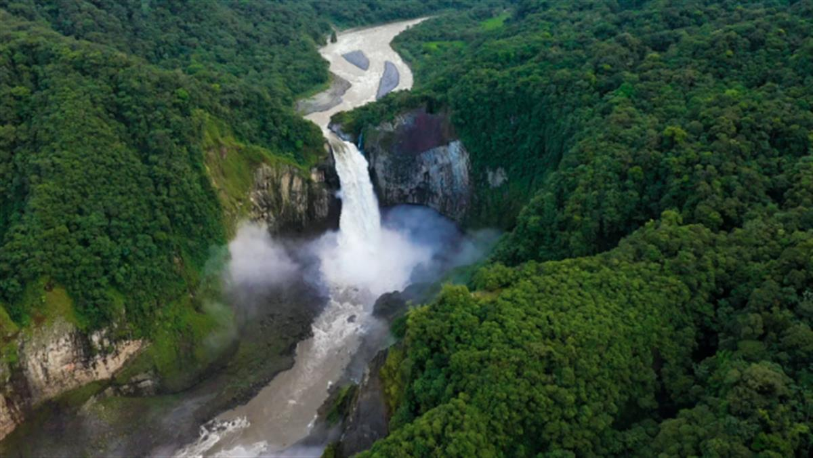

SHAWN PARKIN
SHAWN PARKIN
05.05.2021 06:00 AM
The fight for quiet in a world full of noise pollution
Quiet Parks International wants to reclaim calm among the chaos by protecting natural environments from manmade noise
It took a thunderstorm for Gordon Hempton to truly appreciate quiet. After a visit home to Seattle, Washington in 1980, the then-27-year-old graduate student found himself tiring of the 3,000km+ slog back to his university in Madison, Wisconsin. “You know you’ve been driving too long when you’re driving 60mph and the road seems to be going backwards because you’re slowing down from 90mph,” he says, describing the kind of fatigue that only a long, cross-country journey can induce.
Deciding it was time to turn in for the night and that the late August heat rendered a motel unnecessary, Hempton pulled over and laid down in a cornfield. He stretched out and felt his body soften after hours on the road. As if on cue, the rumble of an approaching thunderstorm sounded overhead. Too exhausted to move, he decided he would stay right there. What he did next led to an epiphany: he listened.
“I took it all in: the movement of the air, the insect activity, the drops of the rain, the echo of the thunder,” he says. “My eyes were closed, but it was as if I could see all the creatures that I’d been sharing life with all this time but never known. I took all sounds in with equal value and was stunned by my awareness.”
So vivid was Hempton’s awakening that he immediately dropped out of his studies, abandoning a degree in plant pathology, and changed the course of his life. Now 67, he is a renowned acoustic ecologist (someone who studies sound in living environments) and co-founder of Quiet Parks International (QPI), a California-based non-profit that identifies and preserves natural soundscapes by testing sound levels in rural and urban spaces and encouraging visitors to recognise the importance of quiet.
Quiet, in this sense, does not mean complete silence. “Historically and scientifically it refers to the absence of significant human-caused noise intrusions,” Hempton says. “So, in a way, we might say that quiet offers an opportunity to be aware of our surroundings, and not denied access by comparatively loud sound pollution.”
To date, QPI has bestowed “Quiet Park” designations on part of the Ecuadorian rainforest, five parks across Stockholm and two locations in Taiwan. It is currently exploring over 260 possible sites worldwide, including in New York City, Hawaii and Poland, and aims to have certified over 50 locations by 2030.

Gordon Hempton, an acoustic ecologist and one of the co-founders of Quiet Parks International - SHAWN PARKIN
Post-thunderstorm, and with his studies abandoned, Hempton became a bike messenger in Seattle and began saving up to purchase a Neumann KU-81i microphone (which replicates the shape of the human head to better mimic our hearing) and a Nagra IV-S reel-to-reel recorder. He travelled within Washington State, often to the nearby Olympic National Park, where he found his subject in the noises that precede and accompany dawn.
“Not only is [the dawn] scenically beautiful, it’s also the time of day when sound travels more clearly, and it’s when wildlife sings,” he says. He estimates it took over 10,000 bike deliveries to purchase his sound recording equipment before, in 1989, he won a grant from the Lindbergh Foundation, which offers funding to those pursuing innovation in technology and the environment. The money allowed him to get off his bike and dedicate his time to documenting the soundscapes of nature.
Three years later, various awards and grants allowed him to travel the world to record the sounds of dawn across six continents. His work became the subject of a PBS documentary, Vanishing Dawn Chorus, for which he earned an Emmy Award for ‘Outstanding Individual Achievement.’ This led to field recording commissions; in 1992, he was hired by Microsoft to work on the launch of the long-running encyclopedia software Microsoft Encarta, consulting on which sounds should accompany different pages. The relationship continued for a decade, and he worked on video games including Microsoft Golf and Microsoft Train Simulator, recording accurate real-life audio to aid the games’ drive for realism.
In 1998, the Smithsonian hired Hempton to collect audio of Hawaii’s endangered flora and fauna to be played at a photography exhibition, and he set off on what he describes as a “dream gig”. Other trips were inspired by the man Hempton sees as his mentor: John Muir, so-called “Father of the National Parks” in the US. Hempton believes Muir is one of few people to have accurately captured the sounds of nature in his collected works, The Eight Wilderness Discovery Books. “Every page of Muir’s writing describes the music, voice and song of nature,” Hempton says. “Statements like ‘Snow melting into music’. What does that mean?”
Intrigued, he hiked out to Hurricane Ridge in Washington’s Olympic National Park and recorded snow melting to try and hear for himself. “By god, if I played it for you now you’d think it was a whole new genre; a little bit like reggae,” he says. “You’d definitely want to dance.”
Yet, despite these ear-arresting experiences, Hempton realised that quiet places were vanishing at an alarming rate, with noise pollution both making it more difficult to listen to the quiet sounds of nature and eliminating species from habitats by interfering with their ability to evade predators or find mates. “People were telling me ‘Oh, if you want quiet you just have to go over here,’” he says. “And I knew that that was not true. I knew that quiet was disappearing and nobody was paying any attention.”
In 2005, he decided to take a symbolic stand. He hiked into the Hoh Rainforest in Washington’s Olympic National Park, carrying in his pocket a small, red stone that had been given to him by a member of the local Quileute Tribe. Deep in the forest, Hempton laid the stone on a log and named the area “One Square Inch Of Silence”. The idea was that if this small area could be free of noise pollution, there was no reason why the surrounding forest couldn’t be either. Hempton used the publicity around the event to lobby the National Park Service and airlines to help maintain the forest’s quiet.
But One Square Inch of Silence wasn’t to last. In 2018, Hempton hiked into the forest and found that air traffic disturbance from the nearby naval base was worse than ever.
The same year, he was contacted by Vikram Chauhan, a design consultant in Mumbai, India who had come to recognise the importance of quiet in the midst of a personal crisis, which he says resulted in “tremendous stress and suffering”. “It was almost as if my entire life was crumbling and there was nothing I could do to stop it,” Chauhan explains. “The only thing left for me to do was to accept everything. Within a few days, something surprising and unexpected started happening; my mind started becoming quieter. The acceptance of the situation seemed to have paused the constant mental chatter in my mind, and I started experiencing a state of peace and positive well-being like never before.”
Chauhan, now 44, noticed that when he spent time in nature, this sense of peace would deepen. “I felt I was on to something,” he says. “I had found deep happiness, and I had found a way to get there.”
An online search brought him to Hempton’s work, and the pair teamed up to co-found Quiet Parks International, with Chauhan now taking the role of president and Hempton as secretary. Chauhan – who calls Hempton “The Poster Boy of Quiet Nature” – believes it is the combination of their eastern and western sensibilities that makes QPI powerful. “We brought different perspectives to quiet,” he says. “His perspective was very western; a scientific and quantitative experience of outer quiet. Mine was very eastern; a very qualitative experience of inner quiet.”
Gordon Hempton taking a sound recording on the Rialto Beach in Olympic National Park Washington State - SHAWN PARKIN
To test a place for quiet, QPI works to a set of standards laid out by its Swedish executive director, Ulf Bohman, who joined in 2019. (QPI’s staff now comprises a team of six, with a few dozen extra advisors, associates and regional representatives.) Having grown up in the remote far north of Sweden, Bohman learned to appreciate quiet from an early age, and spent much of the 1990s guiding office workers through team bonding exercises in the wild – one of which involved groups attempting to be silent for half a day. He now specialises in urban parks for QPI, while Hempton focuses on wilder areas.
According to Bohman, the first step to declaring an area a Quiet Park is to gather as much data as possible. Stockholm and London both have detailed noise maps available, and local resident groups can often help point out the quieter areas of a given park. The aim, Bohman says, is to “learn how the park as a whole is affected by noise, and where the quiet spots might be.” These should be areas where “the sound of nature dominates, and the sound of the city are moved into the background.”
Once a suitable location has been found, Bohman makes a series of sound measurements, mostly using a handheld sound level meter by Extech which measures sound levels in either dBA or dBC frequencies (the “A” and “C” refer to various filters applied to increase sensitivity towards sounds of certain frequencies; dBA picks up mid-level frequencies; dBC is more sensitive to low- and high-level frequencies). Bohman sits down at a site, turns on his sound level meter and remains still and quiet for at least 15 minutes.
If he is able to record sound levels lower than 45 decibels (slightly louder than a quiet library), with no more than eight short noise disturbances per hour, each of which must not exceed 65 decibels (a loud conversation in a restaurant), then the location may be awarded Quiet Park status.
This doesn’t mean the whole park has to be quiet. “You can’t expect the entire park to be quiet in an urban setting,” Bohman says. “It doesn’t exist.” In the case of the Judarskogen Nature Preserve, near Stockholm, Bohman collected recordings at three separate locations, noting their co-ordinates, temperature, wind speed, humidity, the length of measurement, the sound level in decibels and any disturbances.
Sound levels at location “M1”, a park bench facing over a lake, were recorded for 32 minutes, with a decibel rating of 42. In terms of distractions, Bohman lists a wind burst, an older couple chatting, a barking dog and a cell phone ringing. Location “M2”, also by the water, averaged a quieter average decibel rating of 39, the only distractions the occasional runner or walking couple. Sound levels at “M3” were higher, at 46 decibels due to aircraft and an alarm. But as the average level for the park was below 45 decibels, the nature preserve was designated a Quiet Park, the first of five in Sweden to date.
Vikram Chauhan, co-founder and president of Quiet Parks International
Not every location is so easily won. Bohman recalls testing Älvsjöskogen park, also in inner city Stockholm. The park is flanked on one side by a metro line and on the other by a train line. In between the two is a noisy boating lake. “It was more a question of, could you even find a quiet spot in this park?” Bohman says. Eventually, he managed to find a few areas hidden away deeper in the park. “If you’ve done your homework and use the noise maps and know about the typography of the park, you might find hidden areas, then you can usually find good spots,” he says.
One park that didn’t make the cut was located on either side of the main railroad coming into Stockholm from the south. While one area of the park was large enough to offer some secluded spaces, the other side was too narrow to find a place free from noise. In this instance, Bohman had to admit defeat. He explains that the number of sites tested within a given park often depends on the size of the park; larger parks might have six locations, smaller ones just one. Another park – a piece of old farmland – was simply too large and flat to break up man-made noise. With no hills or wooded areas to absorb noise pollution from nearby roads, the whole park was too loud, and thereby disqualified.
The process of designating a quiet park is continually evolving. Bohman quickly learned the importance of taking multiple recordings over multiple days, including weekends and evenings when people most use the park. Visiting at different times throughout the day also enables him to take into account different wind and traffic noise levels. One problem is that, as cities are developed, construction work may render a previously quiet area temporarily noisy.
Keeping track of the conditions in any given park is therefore an ongoing process. Hempton has also outlined plans to add visual, olfactory and tactile criteria into the QPI standards in the near future, further stretching the definition of “quiet”. “We always consider the visual,” Bohman explains. “It should feel that you’re in nature, so you see as little as possible of the city scape or power lines. In city settings, people don’t listen. They’re shut off because they’re used to the noise of the city. I think it’s key in an urban setting to get the other senses involved too.”

Lake Judarn in Stockholm’s Judarskogen Nature PreserveOver the last year, the Covid-19 pandemic has meant that quiet reflection has been forced upon many of us. For a brief period, the sky was clear of planes, the roads empty of cars and the internet flooded with images of wildlife venturing into urban areas.
Despite the momentary respite, Hempton knows that noise pollution remains a problem. “We don’t have any place on Earth that is free of noise pollution for a 24-hour period,” he says. “Air traffic has doubled in the last 30 years and is expected to double again before 2030. Marine traffic has quadrupled in the last 20 years. And the world’s population has doubled in my lifetime.”
Noise pollution is more than an irritant. According to an Imperial College London analysis of the health data of 144,000 adults in Norway and the Netherlands, long-term exposure to traffic noise could cause health problems separately to air pollution. Unpleasant sounds – like car horns – set off our stress response system, flooding our bodies with harmful chemicals, including cortisol. This has been linked to higher levels of anxiety and depression, as well as greater risk of stroke, heart disease and hypertension (high blood pressure).
The World Health Organisation estimates that lives are cut short by a total of one million years annually across western Europe due to noise pollution. Meanwhile, the European Environment Agency (EEA) has linked noise pollution to 12,000 premature deaths, 43,000 hospital admissions and 900,000 cases of hypertension each year across Europe.
“We estimate that 20 per cent of Europe’s population is exposed to chronic noise levels that are harmful to health – that corresponds to more than 100 million people,” Eulalia Peris, a noise expert at the EEA, says. “Road traffic is by far the source affecting the most people. It is an important public health issue. It causes annoyances, sleep disturbance, negative effects on the metabolic and cardiovascular system as well as cognitive impairment in children. We need to focus on prevention – for example, not building a highway in a highly populated area.”
Humans aren’t the only species to be affected. A 2019 meta-analysis of 108 studies of over 100 animal species by Queen's University Belfast found that noise pollution disrupts animals’ navigation abilities and mating rituals, and can increase physiological stress levels. It interrupts the hunting patterns of bats, and prevents fish larvae from navigating home to the safety of coral reefs.
On the other side of the equation, reevaluating our relationship with the sounds of nature, as opposed to man-made noise, has been suggested to improve human wellbeing. A 2017 study by professor Hugo Critchley at Brighton and Sussex Medical School measured participants’ brain activity and heart rate as they listened to natural and manmade sounds. Critchley explains that (for the duration of the test) subjects listening to natural soundscapes were less distracted, more relaxed and better able to recover from stress.
Meanwhile, a King's College London study found that exposure to trees and bird song improved mental wellbeing. It isn’t just the western world that feels the benefit of time spent in nature; Japanese “forest bathing pioneer” and physician Qing Li believes time in nature is vital and encourages people to leave their phones at home while they “listen to the wind and taste the air”.
Simply making people more aware of noise levels may be the first step, and has been found to bear fruit; a 2011 Penn State University experiment asked visitors to the Muir Woods National Monument forest, California to speak quietly and turn off their phones. As a result, ambient noise in the park dropped by three decibels, the equivalent of removing 1,200 visitors from the park.

The forest in Taiwan’s Yangmingshan National Park, situated just outside of Taipe - CRYSTITE RF / ALAMY STOCK PHOTOOnce an area has been designated a quiet park, Hempton and the QPI team hope that an uptick in ecotourism will provide an incentive for local authorities to maintain the peace. Due to the infancy of the project and Covid-19’s impact, it is currently too early to see if QPI certification will lead to increased tourism and economic benefits. But quiet is, of course, already a precious commodity. “In the Nordic countries we have always had tourists from Germany and Holland who come just for solitude,” Bohman says. “Germans buy houses in the middle of the forest in Sweden, which is a search for solitude and quiet.” Hempton points to an increasing number of travel articles focusing on quiet escapes; he was previously hired by Canadian tourism institution Parks Canada to document the natural quiet at that country’s Grasslands National Park.
QPI has a separate designation for “Wilderness Quiet Parks”, in more rural areas. Laila Chin-Hui Fan, a journalist, broadcaster and host of the Taiwanese radio show Nature Notes, joined the organisation as director of Wilderness Quiet Parks, Asia, after first coming across Hempton’s work on “One Square Inch of Silence”. “Taiwan is a small island with a very condensed population, so the quiet issue is very severe,” she explains. “It bothered me all the time. Gordon’s action encouraged me that you can persuade people to protect nature’s sound.”
Inspired by his idea, she looked for places to record quiet in Taiwan, starting with Taiping Mountain, in one of the country’s three largest forested recreation areas. She recalls trying to explain her mission to the head of the local parks bureau. Because no one had ever complained about noise levels on Taiping Mountain before, the official’s response was essentially: so what?
But after QPI was founded, Fan was able to persuade the Taiwanese government to establish a “Silence Trail” on the mountain, which is now officially a protected space of quiet under the QPI umbrella. Signs along the trail ask visitors not to make noise, including conversation or playing music, and to avoid stepping on moss in order to preserve the trail’s natural state.

Laila Chin-Hui Fan, advisor and director of wilderness, Quiet Parks Asia
To date, the most tangible impact of a QPI designation has perhaps been in the Zabalo River park, a million-acre area of the Ecuadorian Amazon rainforest home to the indigenous Cofán people. Hempton met Cofán leader Randy Borman at a TED event in Brazil in 2010 and first visited Zabalo in 2012. When Quiet Parks International was born, they both agreed that Zabalo would be an ideal candidate. Hempton completed his third visit to the rainforest in 2019, designating it as the first full Wilderness Quiet Park.
“If you want to know what is important to a given culture, you look at the language,” Borman writes by email. “In the case of the Cofán people, over half of our vocabulary is dedicated to describing our forest. Quiet as a separate concept is not really well developed. However, on a practical level, a Cofán forest person's catalogue of sounds far surpasses the visible. A toucan is a toucan to the eye, but its numerous sounds – wing beats, calls, bill clackings – are all part of the sound lexicon that a forest person develops.”
The Cofán’s land and areas surrounding it are under threat from poaching and companies looking to extract oil and gold. The community’s own Cofán Survival Fund is essential in lobbying the Ecuadorian government to protect the area. Hempton hopes that ecotourism can drive donations to such funds and give the Cofán a new tool to fight intrusions into their land. “The Cofán can stand up during public hearings and say, ‘This adjacent land use will impact the value of quiet which is used for quiet-seeking tourism and provides an economy’,” he says. “You and I are breathing the oxygen from their land, so we have a lot of unpaid debt to the indigenous people that have managed these lands.”
Borman says that the QPI designation has helped attract tourism and reinforced the community’s commitment to conservation, but as of yet it has not made much political difference. “The Quiet Parks designation is important within the tourism industry where it lends an aura to our territories that is valuable for attracting visitors,” he says. “As a political tool, however, it doesn't have much clout yet. I foresee a day when it will be part of a political and commercial cocktail which will help us continue the protection of our territories.”
As people have come to realise the importance of quiet over the past year, QPI’s services have been increasingly in demand, including an invitation from the Polish government to certify an ancient deciduous forest. “[Covid] created a shockwave because the whole world was experiencing a quiet it hadn’t experienced before,” Hempton says. “At first it was a little eerie and disconcerting, then people began to notice the health benefits: the clarity of thought, the ability to recognise what is most important to them.”

The Zabalo river in Ecuador’s rainforest. In 2019 it became the first Wilderness Quiet ParkIronically, quiet has not always been conducive to Hempton’s own sense of inner peace. In 2003, over a ten-day period, he suddenly lost his hearing.
He describes hearing a low surging boom in his ear, and remembers thinking he was tuning in to a new class of supertanker in the ocean. “I thought I was becoming extraordinarily perceptive, that my hearing was becoming super sensitive,” he says. It was actually the sound of the arteries surging in his ears as his hearing disappeared.
He says the experience – which lasted for 18 months – put him out of work, and out of touch with his children. “I really think for many parents the sound of their children happy, just being truthful in who they are, is the most beautiful sound,” he says, tearful. Not being able to hear that was devastating. “I had a storm of noise in me, and the quiet was inescapable. I can’t tell you how unsurvivable that would have been if it had gone on longer than 18 months.”
The exact cause of Hempton’s hearing loss (and return) was never diagnosed. All was well until his hearing began to deteriorate again in 2012. For all practical purposes, his left ear is now entirely deaf, with frequent bouts of loud tinnitus. His right ear isn't much better. “I try to embrace my impairment because I still hear low frequencies, which is a bit of a curse because that’s where all the noise pollution is,” he says.
Yet Hempton has much to be hopeful about. Walking the streets of Seattle, his five-year-old grandson asked, “Grandpa, do you hear the music?” Because of his hearing loss, Hempton assumed he was referring to a radio playing from a window. He was talking about the singing of the birds and the wind in the trees.
As for next steps, Hempton had hoped that airlines and other enterprises might start to change their flight paths and reduce noise pollution, making a commitment to quiet spaces as a way to attract eco-conscious customers. But at the moment, nothing needs to change. “Prior to Covid, the slow boil of increased noise pollution was almost imperceptible and had deprived us of an essential human need,” he says. “I hope that we don't forget that the quiet we experienced in Covid has made us healthier and in some ways enjoy life differently. I expect the natural outcome of this is that quiet will come back into our lives just as it has existed since the beginning of time.
TOPICS ENVIRONMENTMAY / JUNE 2021 ISSUE
SOURCE: WIRED